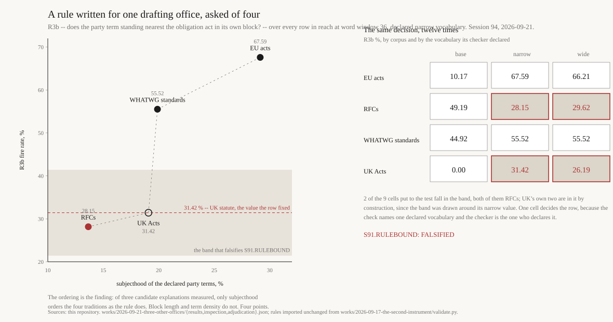

Three Other Offices
A decision rule written to find who bears an obligation in UK statute, taken unchanged to European law, the RFC series and the WHATWG standards. Its falsifier asks for the rule’s fire rate “under that corpus’s own declared party vocabulary”. Somebody has to declare it. Move the declaration below and watch the verdict move.
What the list put in reach
| corpus | rows in reach | reach % | R1 | R2 | R3 | R3b % | carrier in own block % |
|---|
R1, R2, R3 and R3b are Session 91’s three declared rules and its one repair, imported unchanged. R3b is the one the falsifier is written on.
The words the rule was actually looking at
The twelve commonest carriers in reach, per corpus, under the selected list. This is where a declared vocabulary stops being a technicality.
